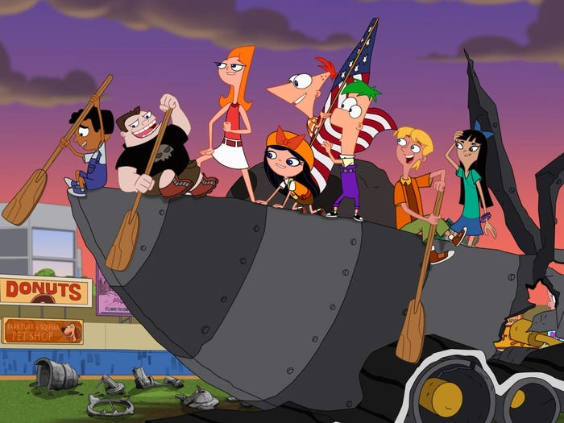

About Phineas and Ferb
Phineas and Ferb are young prodigy engineers who have the greatest summer ever!
Phineas And Ferb And their friends
More about Phineas and Ferb
- They have cool shaped heads
- They found the best way to spend 104 days of summer vacation
- alongside their friends and sister,Candace who always tries to bust them
Phineas and Ferb's friends
Their friends include: Buford, Isabella, Baljeet Stacy, Jeremy and of course, their pet Perry the Platypus Click on the links below to read more about them!